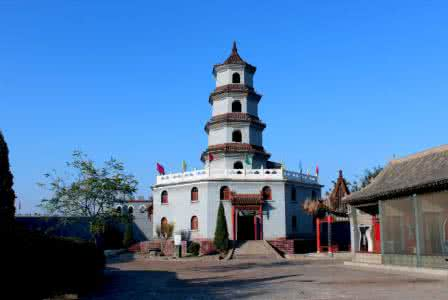
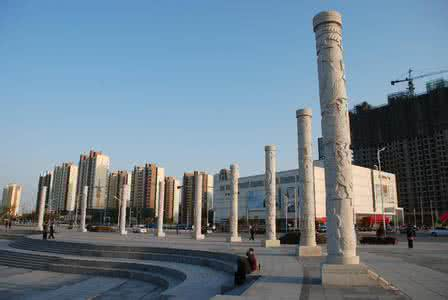
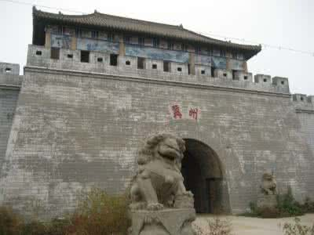
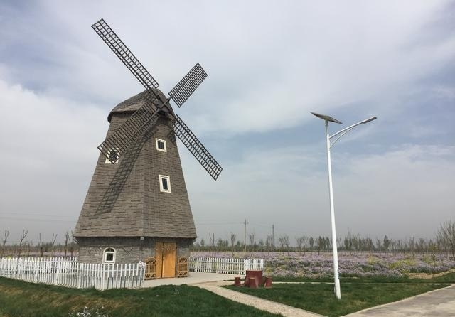

|  | 冀州竹林寺，位于河北省冀州市北关村东北300米处。据传，古时在冀州城北有一座山，在此常出现海市蜃楼幻景，可以隐隐看见亭台楼阁悬于空中，犹如仙境，被传为三个仙山之一的紫微山。明朝时冀州州守常命人将此云幻奇景绘图以传，嘉靖年间一位冀州官吏召集能工巧匠，依照海市蜃楼幻景，在州城东北修建竹林寺，香火极盛。 |
|  | 冀州九州文化广场，位于冀州区滨湖新区，湖滨大道北侧，兴华大街轴线穿过广场，紧临滨湖生态公园和冀宝斋瓷器博物馆。该广场东西长310米，南北宽140米，总面积56140平方米，水面面积30760平方米，总投资2000万元。整个广场以“九州之首”的文化底蕴进行规划设计，以弘扬冀州传统文化为主题，以市民休闲娱乐为目的。 |
|  | 冀州古城遗址，位于冀州市北关村一带，是汉代冀州古城西北面的一段土城墙，从东北向西南延伸，总长4500米，分布面积225万平方米。沿汉城址西、北面的沟渠为原城的护城河。2013年5月3日，国务院公布了第七批全国重点文物保护单位，冀州古城遗址名利其中。冀州历史悠久，可追溯到中华文明创建的上古时期。 |
|  | 衡水湖森林公园，衡水湖森林公园总面积23000亩，是一个以蝴蝶兰、郁金香、樱花、梨花、桃花、杏花、海棠花为主题，融合养生文化、田园生活情趣，集自然观光、生态农业、花卉观赏、文化艺术品鉴、休闲游玩、科普教育、餐饮美食于一体的高品位绿色旅游综合园区。 |